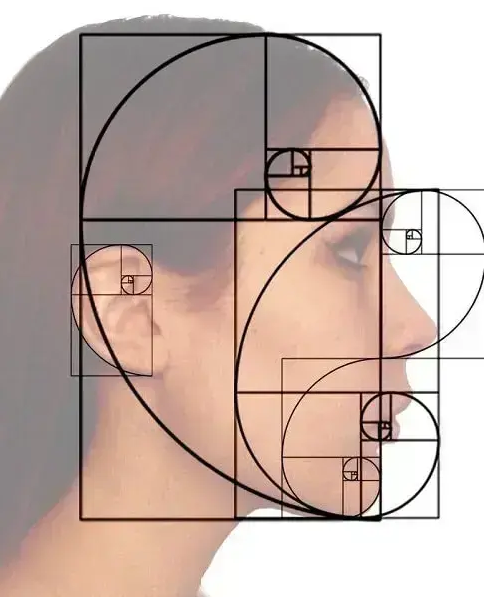

Funções#
Python fornece diversas funções integradas, mas você também pode escrever suas próprias funções. Uma função é como um miniprograma dentro de um programa.
def hello(): #def nome_da_função(arg)
print('Howdy!')
print('Howdy!!!')
print('Hello there.')
hello() #chamando
Howdy!
Howdy!!!
Hello there.
hello()
hello()
hello()
Howdy!
Howdy!!!
Hello there.
Howdy!
Howdy!!!
Hello there.
Howdy!
Howdy!!!
Hello there.
No código, uma chamada de função é apenas o nome da função seguido de parênteses, possivelmente com algum número de argumentos entre os parênteses.
Quando a execução do programa atingir essas chamadas, ele irá para a linha superior da função e começará a executar o código ali.
Ao chegar ao final da função, a execução retorna para a linha que chamou a função e continua percorrendo o código como antes.
Um dos principais objetivos das funções é agrupar o código que é executado várias vezes.
Instruções def com parâmetros#
Ao chamar a função print() ou len() , você passa valores para eles, chamados argumentos , digitando-os entre parênteses. Você também pode definir suas próprias funções que aceitam argumentos.
def hello(name):
print('Hello, ' + name)
hello()
---------------------------------------------------------------------------
TypeError Traceback (most recent call last)
Cell In[6], line 1
----> 1 hello()
TypeError: hello() missing 1 required positional argument: 'name'
hello('Alice')
hello('Bob')
Hello, Alice
Hello, Bob
name = "informatica"
print(name)
informatica
hello(name)
Hello, informatica
A definição da função hello() neste programa possui um parâmetro chamado name. Parâmetros são variáveis que contêm argumentos. Quando uma função é chamada com argumentos, os argumentos são armazenados nos parâmetros. Na primeira vez que a função hello() é chamada, é passado o argumento ‘Alice’. A execução do programa entra na função e o nome do parâmetro é automaticamente definido como ‘Alice’ , que é impresso pela instrução print().
Uma coisa especial a ser observada sobre os parâmetros é que o valor armazenado em um parâmetro é esquecido quando a função retorna. Por exemplo, se você adicionou print(name) depois de hello(‘Bob’) no programa anterior, o programa forneceria um NameError porque não há nenhuma variável chamada name. Esta variável é destruída após o retorno da chamada de função hello(‘Bob’) , então print(name) se referiria a uma variável de nome que não existe. Isto é semelhante a como as variáveis de um programa são esquecidas quando o programa termina.
print(name)
informatica
Definir, Chamar, Passar, Argumento, Parâmetro#
Definir uma função é criá-la, assim como uma instrução de atribuição como spam = 42 cria a variável spam.
def sayHello(name):
print('Hello, ' + name)
sayHello('Al')
Hello, Al
A instrução def define a função sayHello(), que chama a função agora criada, enviando a execução para o topo do código da função. Esta chamada de função também é conhecida como passagem do valor da string ‘Al’ para a função. Um valor sendopassado para uma função em uma chamada de função é um argumento. O argumento ‘Al’ é atribuído a uma variável local chamada name. Variáveis que possuem argumentos atribuídos a elas são parâmetros.
Valores de retorno e instruções de retorno#
Quando você chama a função len() e passa um argumento como ‘Hello’ , a chamada da função é avaliada como o valor inteiro 5 , que é o comprimento da string que você passou. Em geral, o valor avaliado por uma chamada de função é chamado de valor de retorno da função.
Ao criar uma função usando a instrução def , você pode especificar qual deve ser o valor de retorno com uma instrução return . Uma instrução de retorno consiste no seguinte:
A palavra-chave de retorno
O valor ou expressão que a função deve retornar
Quando uma expressão é usada com uma instrução return , o valor de retorno é o valor avaliado pela expressão.
Por exemplo, o programa a seguir define uma função que retorna uma string diferente dependendo do número que ela é passada como argumento.
len("informatica")
11
import random
def getAnswer(answerNumber): #define função getAnswer (argumento=asnwerNumber)
if answerNumber == 1:
return 'It is certain' #return da função para aa condição deste if
elif answerNumber == 2:
return 'It is decidedly so'
elif answerNumber == 3:
return 'Yes'
elif answerNumber == 4:
return 'Reply hazy try again'
elif answerNumber == 5:
return 'Ask again later'
elif answerNumber == 6:
return 'Concentrate and ask again'
elif answerNumber == 7:
return 'My reply is no'
elif answerNumber == 8:
return 'Outlook not so good'
elif answerNumber == 9:
return 'Very doubtful'
r = random.randint(1, 9) #a função random.randint() é chamada com dois argumentos: 1 e 9. Ele é avaliado como um número inteiro aleatório entre 1 e 9 (incluindo os próprios 1 e 9 ), e esse valor é armazenado em uma variável chamada r .
fortune = getAnswer(r) #chama a função e passa como argumento
print(r)
print(fortune)
3
Yes
Como você pode passar valores de retorno como argumento para outra chamada de função, você pode encurtar estas últimas três linhas:
print(getAnswer(random.randint(1, 9)))
Ask again later
O valor None#
Em Python, existe um valor chamado None , que representa a ausência de um valor. O valor None é o único valor do tipo de dados NoneType . (Outras linguagens de programação podem chamar esse valor de null , nil ou undefined .) Assim como os valores booleanos True e False , None deve ser digitado com N maiúsculo .
Esse valor sem valor pode ser útil quando você precisa armazenar algo que não será confundido com um valor real em uma variável. Um lugar onde None é usado é como valor de retorno de print() . A função print() exibe texto na tela, mas não precisa retornar nada da mesma forma que len() ou input() . Mas como todas as chamadas de função precisam ser avaliadas como um valor de retorno, print() retorna None.
Python adiciona return None ao final de qualquer definição de função sem instrução de retorno . Isso é semelhante a como um loop while ou for termina implicitamente com uma instrução continue . Além disso, se você usar uma instrução return sem um valor (ou seja, apenas a palavra-chave return por si só), None será retornado
vazio = print('Hello!')
Hello!
vazio
None == vazio
True
Argumentos de palavras-chave são frequentemente usados para parâmetros opcionais . Por exemplo, a função print() possui os parâmetros opcionais end e sep para especificar o que deve ser impresso no final de seus argumentos e entre seus argumentos
print('Hello')
print('World')
Hello
World
print('Hello', end=' ')
print('World')
Hello World
print('cats','dogs','mice')
cats dogs mice
print('cats', 'dogs', 'mice', sep=', ')
cats, dogs, mice
CALL Stack#
Imagine que você tem uma conversa sinuosa com alguém.
Você fala sobre sua amiga Alice, o que então te lembra uma história sobre seu colega de trabalho Bob, mas primeiro você tem que explicar algo sobre sua prima Carol.
Você termina sua história sobre Carol e volta a falar sobre Bob, e quando termina sua história sobre Bob, volta a falar sobre Alice.
Mas então você se lembra de seu irmão David, então conta uma história sobre ele e depois volta a terminar sua história original sobre Alice.
Sua conversa seguiu uma estrutura semelhante a uma pilha , como na Figura seguinte.
A conversa é semelhante a uma pilha porque o tópico atual está sempre no topo da pilha.

Semelhante ao exemplo, chamar uma função não envia a execução em uma viagem só de ida ao topo de uma função.
Python lembrará qual linha de código chamou a função para que a execução possa retornar para lá quando encontrar uma instrução de retorno .
Se essa função original chamasse outras funções, a execução retornaria primeiro a essas chamadas de função, antes de retornar da chamada de função original.
def a():
print('a() inicia')
b()
d()
print('a() retorna')
def b():
print('b() inicia')
c()
print ('b() retorna')
def c():
print('c() inicia')
print('c() retorna')
def d():
print('d() inicia')
print('d() retorna')
a()

Escopo Local e Global#
Diz-se que os parâmetros e variáveis atribuídos em uma função chamada existem no escopo local dessa função . Diz-se que variáveis atribuídas fora de todas as funções existem no escopo global . Uma variável que existe em um escopo local é chamada de variável local , enquanto uma variável que existe no escopo global é chamada de variável global. Uma variável deve ser uma ou outra; não pode ser local e global.
O código no escopo global, fora de todas as funções, não pode usar variáveis locais.
No entanto, o código em escopo local pode acessar variáveis globais.
O código no escopo local de uma função não pode usar variáveis em nenhum outro escopo local.
Você pode usar o mesmo nome para variáveis diferentes se elas estiverem em escopos diferentes. Ou seja, pode haver uma variável local chamada spam e uma variável global também chamada spam .
def funcao():
num1 = 31337
funcao()
print(num1)
---------------------------------------------------------------------------
NameError Traceback (most recent call last)
Cell In[1], line 5
2 num1 = 31337
4 funcao()
----> 5 print(num1)
NameError: name 'num1' is not defined
def funcao():
num1 = 31337
print (num1)
funcao()
31337
num1
---------------------------------------------------------------------------
NameError Traceback (most recent call last)
Cell In[3], line 1
----> 1 num1
NameError: name 'num1' is not defined
Os escopos locais não podem usar variáveis em outros escopos locais#
Um novo escopo local é criado sempre que uma função é chamada, inclusive quando uma função é chamada de outra função. Considere este programa:
def funcao_principal():
num1 = 99
funcao_secundaria()
print(num1)
def funcao_secundaria():
num1 = 0
num2 = 101
funcao_principal()
99
def funcao():
num1 = 99
funcao_secundaria()
print(num1)
def funcao_secundaria():
num2 = 101
num1 = 0
print(num1)
funcao_secundaria()
0
Variáveis globais podem ser lidas em um escopo local#
No seguinte programa: Como não existe nenhum parâmetro chamado num1 ou qualquer código que atribua um valor ao num1 na função funcao1() , quando num1 é usado em funcao1() , o Python considera isso uma referência à variável global num1 . É por isso que 42 é impresso quando o programa anterior é executado.
def funcao1():
print(num1)
num1 = 42
funcao1()
print(num1)
42
42
Variáveis locais e globais com o mesmo nome#
Tecnicamente, é perfeitamente aceitável usar o mesmo nome de variável para uma variável global e variáveis locais em escopos diferentes em Python. Mas, para simplificar a sua vida, evite fazer isso.
def funcao():
escopo = 'funcao local'
print(escopo) # prints 'funcao local'
def funcao_secundaria():
escopo = 'funcao_secundaria local'
print(escopo) # prints 'funcao_secundaria local'
funcao()
print(escopo) # prints 'funcao_secundaria local'
escopo = 'global'
funcao_secundaria()
print(escopo) # prints 'global'
funcao_secundaria local
funcao local
funcao_secundaria local
global
print(escopo)
A declaração global#
Se você precisar modificar uma variável global dentro de uma função, use a instrução global . Se você tiver uma linha como variáveis globais no topo de uma função, ela diz ao Python: “Nesta função, nome_da_variável se referem à variável global, então não crie uma variável local com este nome”.
def funcao():
global escopo
escopo = 'funcao'
escopo = 'global'
funcao()
print(escopo)
funcao
Existem quatro regras para saber se uma variável está em um escopo local ou global:
Se uma variável estiver sendo usada no escopo global (ou seja, fora de todas as funções), então ela será sempre uma variável global.
Se houver uma instrução global para essa variável em uma função, ela será uma variável global.
Caso contrário, se a variável for usada em uma instrução de atribuição na função, ela será uma variável local.
Mas se a variável não for usada em uma instrução de atribuição, ela será uma variável global.
def funcao1():
global escopo
escopo = 'funcao1' # this is the global
def funcao2():
escopo = 'funcao2' # this is a local
print(escopo)
def funcao3():
print(escopo) # this is the global
escopo = 42 # this is the global
funcao1()
print(escopo)
funcao1
funcao2()
funcao3()
funcao2
funcao1
Se você tentar usar uma variável local em uma função antes de atribuir um valor a ela, como no programa a seguir, o Python apresentará um erro.
def funcao():
var_local = 'funcao local'
print(var_local) # ERROR!
#escopo = 'global'
funcao()
#print(var_local)
print(var_local)
funcao local
---------------------------------------------------------------------------
NameError Traceback (most recent call last)
Cell In[11], line 11
8 funcao()
9 #print(var_local)
---> 11 print(var_local)
NameError: name 'var_local' is not defined
FUNÇÕES COMO “CAIXAS PRETAS”
Freqüentemente, tudo que você precisa saber sobre uma função são suas entradas (os parâmetros) e seu valor de saída; você nem sempre precisa se preocupar com o funcionamento real do código da função.
Quando você pensa sobre funções dessa forma de alto nível, é comum dizer que você está tratando uma função como uma “caixa preta”.
Manipulação de exceção#
Por exemplo, considere o programa a seguir, que apresenta um erro de divisão por zero.
def divisao(divideBy):
return 42 / divideBy
print(divisao(2))
print(divisao(12))
print(divisao(0))
print(divisao(1))
21.0
3.5
---------------------------------------------------------------------------
ZeroDivisionError Traceback (most recent call last)
Cell In[12], line 6
4 print(divisao(2))
5 print(divisao(12))
----> 6 print(divisao(0))
7 print(divisao(1))
Cell In[12], line 2, in divisao(divideBy)
1 def divisao(divideBy):
----> 2 return 42 / divideBy
ZeroDivisionError: division by zero
Erros podem ser tratados com instruções try e except . O código que pode conter um erro é colocado em uma cláusula try . A execução do programa passa para o início de uma cláusula except seguinte se ocorrer um erro.
Você pode colocar o código anterior de divisão por zero em uma cláusula try e fazer com que uma cláusula except contenha código para lidar com o que acontece quando esse erro ocorre.
def divisao(divideBy):
try:
return 42 / divideBy
except ZeroDivisionError:
print('Error: Invalid argument.')
print(divisao(2))
print(divisao(12))
print(divisao(0))
print(divisao(1))
21.0
3.5
Error: Invalid argument.
None
42.0
https://autbor.com/tryexceptzerodivide/
def divisao(divideBy):
return 42 / divideBy
try:
print(divisao(2))
print(divisao(12))
print(divisao(0))
print(divisao(1))
except ZeroDivisionError:
print('Error: Invalid argument.')
21.0
3.5
Error: Invalid argument.
Um programa curto: Ziguezague
Este programa criará um padrão em zigue-zague para frente e para trás até que o usuário o interrompa pressionando o botão Parar do editor ou pressionando CTRL-C
import time, sys
indent = 0 # How many spaces to indent.
indentIncreasing = True # Whether the indentation is increasing or not.
try:
while True: # The main program loop.
print(' ' * indent, end='')
print('********')
time.sleep(0.1) # Pause for 1/10 of a second.
if indentIncreasing:
# Increase the number of spaces:
indent = indent + 1
if indent == 20:
# Change direction:
indentIncreasing = False
else:
# Decrease the number of spaces:
indent = indent - 1
if indent == 0:
# Change direction:
indentIncreasing = True
except KeyboardInterrupt:
sys.exit()
********
********
********
********
********
********
********
********
********
********
********
********
********
********
********
********
********
********
********
********
********
********
********
********
********
********
********
********
********
********
********
********
********
********
********
********
********
********
********
********
********
********
********
********
********
********
********
********
********
********
********
********
********
********
********
********
********
********
********
********
********
********
********
********
********
********
********
********
********
********
********
********
********
********
********
********
********
********
********
********
********
********
********
********
********
********
********
********
********
********
********
********
********
********
********
********
********
********
********
********
********
********
********
********
********
********
********
********
********
********
********
********
********
********
********
********
********
********
********
********
********
********
********
********
********
********
********
********
********
********
********
********
********
********
********
********
********
********
********
********
********
********
********
********
********
********
********
********
********
********
********
********
********
********
********
********
********
********
********
********
********
********
********
********
********
********
********
********
********
********
********
********
********
********
********
********
********
********
********
********
********
********
********
********
********
********
********
********
********
********
********
********
********
********
********
********
********
********
********
********
********
********
********
********
********
********
********
********
********
********
********
********
********
********
********
********
********
********
********
********
********
********
********
********
********
********
********
********
********
********
********
********
********
********
********
********
********
********
********
********
********
********
********
********
********
********
********
********
********
********
********
********
********
********
********
********
********
********
********
********
********
********
********
********
********
********
********
********
********
********
********
********
********
********
********
********
********
********
********
********
********
********
********
********
********
********
********
********
********
********
********
********
********
********
********
********
********
********
********
********
********
********
********
********
********
********
********
********
********
********
********
********
********
********
********
********
********
********
********
********
********
********
********
********
********
********
********
********
********
********
********
********
********
********
********
********
********
An exception has occurred, use %tb to see the full traceback.
SystemExit
C:\Users\robsonms\AppData\Local\Packages\PythonSoftwareFoundation.Python.3.12_qbz5n2kfra8p0\LocalCache\local-packages\Python312\site-packages\IPython\core\interactiveshell.py:3557: UserWarning: To exit: use 'exit', 'quit', or Ctrl-D.
warn("To exit: use 'exit', 'quit', or Ctrl-D.", stacklevel=1)
Escreva uma função chamada collatz() que tenha um parâmetro chamado number .
Se o número for par, então collatz() deverá imprimir o número // 2 e retornar este valor.
Se o número for ímpar, então collatz() deverá imprimir e retornar 3 * number + 1 .
Em seguida, escreva um programa que permita ao usuário digitar um número inteiro e continue chamando collatz() nesse número até que a função retorne o valor 1 .
(Surpreendentemente, esta sequência realmente funciona para qualquer número inteiro – mais cedo ou mais tarde, usando esta sequência, você chegará a 1! Mesmo os matemáticos não sabem ao certo por quê. Seu programa está explorando o que é chamado de sequência de Collatz, às vezes chamada de “o mais simples problema de matemática impossível.”)
Lembre-se de converter o valor de retorno de input() em um número inteiro com a função int() ; caso contrário, será um valor de string.
Dica: um número inteiro é par se o número % 2 == 0 e é ímpar se o número % 2 == 1 .
def collatz(number):
lst=[]
lst.append(number)
while(number!=1):
if(number%2==0):
number=number//2
lst.append(number)
else:
number=number*3+1
lst.append(number)
i=0
while i < len(lst):
print(lst[i], sep="\n")
i += 1 #i = i + 1
number = int(input("Digite um número"))
collatz(number)
9999
29998
14999
44998
22499
67498
33749
101248
50624
25312
12656
6328
3164
1582
791
2374
1187
3562
1781
5344
2672
1336
668
334
167
502
251
754
377
1132
566
283
850
425
1276
638
319
958
479
1438
719
2158
1079
3238
1619
4858
2429
7288
3644
1822
911
2734
1367
4102
2051
6154
3077
9232
4616
2308
1154
577
1732
866
433
1300
650
325
976
488
244
122
61
184
92
46
23
70
35
106
53
160
80
40
20
10
5
16
8
4
2
1
Série Fibonacci#
Definindo funções#
A sequência de Fibonacci é um padrão numérico em que o primeiro e o segundo termo são iguais a 1 e cada termo a partir do terceiro é a soma dos dois termos anteriores.

O que é Proporção Áurea?#
Proporção áurea é uma constante real algébrica irracional utilizada na arquitetura, nas artes e no design gráfico. Ela é representada pela divisão de uma reta em dois segmentos (a e b), sendo que quando a soma desses segmentos é dividida pela parte mais longa, o resultado obtido é de aproximadamente 1,61803398875. Este valor é chamado de “número de Ouro”.



A distância entre o queixo e a base do nariz deve ser a mesma distância da base do nariz até a parte inferior da testa.
Essa mesma medida deve ser também o tamanho da testa e da orelha.
A proporção áurea no rosto também diz que o nariz tem a mesma largura do olho. Essa medida também é a distância entre um olho e outro.
Podemos criar uma função que escreve a série de Fibonacci até um limite arbitrário:
def fib(n): # write Fibonacci series up to n
"""Print a Fibonacci series up to n."""
a, b = 0, 1
while a < n:
print(a, end=' ')
a, b = b, a+b
print()
# Now call the function we just defined:
#fib(2000)
#0 1 1 2 3 5 8 13 21 34 55 89 144 233 377 610 987 1597
'''A palavra reservada def inicia a definição de uma função. Ela deve ser seguida do nome da função e da lista de parâmetros formais entre parênteses. Os comandos que formam o corpo da função começam na linha seguinte e devem ser indentados.'''
#lembrar do docstring
'''Uma definição de função associa o nome da função com o objeto função na tabela de símbolos atual. O interpretador reconhece o objeto apontado pelo nome como uma função definida pelo usuário. Outros nomes também podem apontar para o mesmo objeto função e também pode ser usados pra acessar a função:
>>>
fib
<function fib at 10042ed0>
f = fib
f(100)
0 1 1 2 3 5 8 13 21 34 55 89'''
'''É fácil escrever uma função que retorna uma lista de números da série de Fibonacci, ao invés de exibi-los:
>>>
def fib2(n): # return Fibonacci series up to n
"""Return a list containing the Fibonacci series up to n."""
result = []
a, b = 0, 1
while a < n:
result.append(a) # see below
a, b = b, a+b
return result
f100 = fib2(100) # call it
f100 # write the result
[0, 1, 1, 2, 3, 5, 8, 13, 21, 34, 55, 89]
Este exemplo demonstra novos recursos de Python:
A instrução return finaliza a execução e retorna um valor da função. return sem qualquer expressão como argumento retorna None. Atingir o final da função também retorna None.
A instrução result.append(a) chama um método do objeto lista result. Um método é uma função que ‘pertence’ a um objeto, e é chamada obj.nomemetodo, onde obj é um objeto qualquer (pode ser uma expressão), e nomemetodo é o nome de um método que foi definido pelo tipo do objeto. Tipos diferentes definem métodos diferentes. Métodos de diferentes tipos podem ter o mesmo nome sem ambiguidade. (É possível definir seus próprios tipos de objetos e métodos, utilizando classes, veja em Classes) O método append(), mostrado no exemplo é definido para objetos do tipo lista; adiciona um novo elemento ao final da lista. Neste exemplo, ele equivale a result = result + [a], só que mais eficiente.
'''
'É fácil escrever uma função que retorna uma lista de números da série de Fibonacci, ao invés de exibi-los:\n>>>\n\ndef fib2(n): # return Fibonacci series up to n\n\n """Return a list containing the Fibonacci series up to n."""\n\n result = []\n\n a, b = 0, 1\n\n while a < n:\n\n result.append(a) # see below\n\n a, b = b, a+b\n\n return result\n\n\nf100 = fib2(100) # call it\n\nf100 # write the result\n[0, 1, 1, 2, 3, 5, 8, 13, 21, 34, 55, 89]\n\nEste exemplo demonstra novos recursos de Python:\n\n A instrução return finaliza a execução e retorna um valor da função. return sem qualquer expressão como argumento retorna None. Atingir o final da função também retorna None.\n\n A instrução result.append(a) chama um método do objeto lista result. Um método é uma função que ‘pertence’ a um objeto, e é chamada obj.nomemetodo, onde obj é um objeto qualquer (pode ser uma expressão), e nomemetodo é o nome de um método que foi definido pelo tipo do objeto. Tipos diferentes definem métodos diferentes. Métodos de diferentes tipos podem ter o mesmo nome sem ambiguidade. (É possível definir seus próprios tipos de objetos e métodos, utilizando classes, veja em Classes) O método append(), mostrado no exemplo é definido para objetos do tipo lista; adiciona um novo elemento ao final da lista. Neste exemplo, ele equivale a result = result + [a], só que mais eficiente.\n'
fib(100)
0 1 1 2 3 5 8 13 21 34 55 89
def fulano():
print('fulano() inicia')
sincrano()
sincrana()
print('fulano() retorna')
def sincrano():
print('sincrano() inicia')
fulana()
print ('sincrano() retorna')
def fulana():
print('fulana() inicia')
print('fulana() retorna')
def sincrana():
print('sincrana() inicia')
print('sincrana() retorna')
fulano()
fulano() inicia
sincrano() inicia
fulana() inicia
fulana() retorna
sincrano() retorna
sincrana() inicia
sincrana() retorna
fulano() retorna
def soma_matricula(matricula): # Define a função que recebe a matrícula como argumento
soma_pares = 0 # Inicializa a soma dos números pares
soma_impares = 0 # Inicializa a soma dos números ímpares
for numero in str(matricula): # Itera sobre cada número da matrícula, convertendo-a para string
numero_int = int(numero) # Converte o número de string para inteiro
if numero_int % 2 == 0: # Verifica se o número é par
soma_pares += numero_int # Adiciona o número à soma dos pares
else: # Caso o número seja ímpar
soma_impares += numero_int # Adiciona o número à soma dos ímpares
return soma_pares, soma_impares # Retorna as somas dos números pares e ímpares
# Minha matrícula de exemplo
matricula = 123456 # Substitua pelo seu número de matrícula
# Chama a função e armazena os resultados
soma_pares, soma_impares = soma_matricula(matricula)
# Imprime os resultados em uma única linha
print(f"Soma dos números pares: {soma_pares}, Soma dos números ímpares: {soma_impares}")
Soma dos números pares: 12, Soma dos números ímpares: 9
Funções recursivas#
Uma função recursiva é toda aquela que chama a si mesma.

Desta forma, uma função recursiva funciona como um loop e se não houver uma estruturação correta criará um loop infinito.
def contagemRegressiva(num):
print(num)
contagemRegressiva(num - 1)
contagemRegressiva(10)
10
9
8
7
6
5
4
3
2
1
0
-1
-2
-3
-4
-5
-6
-7
-8
-9
-10
-11
-12
-13
-14
-15
-16
-17
-18
-19
-20
-21
-22
-23
-24
-25
-26
-27
-28
-29
-30
-31
-32
-33
-34
-35
-36
-37
-38
-39
-40
-41
-42
-43
-44
-45
-46
-47
-48
-49
-50
-51
-52
-53
-54
-55
-56
-57
-58
-59
-60
-61
-62
-63
-64
-65
-66
-67
-68
-69
-70
-71
-72
-73
-74
-75
-76
-77
-78
-79
-80
-81
-82
-83
-84
-85
-86
-87
-88
-89
-90
-91
-92
-93
-94
-95
-96
-97
-98
-99
-100
-101
-102
-103
-104
-105
-106
-107
-108
-109
-110
-111
-112
-113
-114
-115
-116
-117
-118
-119
-120
-121
-122
-123
-124
-125
-126
-127
-128
-129
-130
-131
-132
-133
-134
-135
-136
-137
-138
-139
-140
-141
-142
-143
-144
-145
-146
-147
-148
-149
-150
-151
-152
-153
-154
-155
-156
-157
-158
-159
-160
-161
-162
-163
-164
-165
-166
-167
-168
-169
-170
-171
-172
-173
-174
-175
-176
-177
-178
-179
-180
-181
-182
-183
-184
-185
-186
-187
-188
-189
-190
-191
-192
-193
-194
-195
-196
-197
-198
-199
-200
-201
-202
-203
-204
-205
-206
-207
-208
-209
-210
-211
-212
-213
-214
-215
-216
-217
-218
-219
-220
-221
-222
-223
-224
-225
-226
-227
-228
-229
-230
-231
-232
-233
-234
-235
-236
-237
-238
-239
-240
-241
-242
-243
-244
-245
-246
-247
-248
-249
-250
-251
-252
-253
-254
-255
-256
-257
-258
-259
-260
-261
-262
-263
-264
-265
-266
-267
-268
-269
-270
-271
-272
-273
-274
-275
-276
-277
-278
-279
-280
-281
-282
-283
-284
-285
-286
-287
-288
-289
-290
-291
-292
-293
-294
-295
-296
-297
-298
-299
-300
-301
-302
-303
-304
-305
-306
-307
-308
-309
-310
-311
-312
-313
-314
-315
-316
-317
-318
-319
-320
-321
-322
-323
-324
-325
-326
-327
-328
-329
-330
-331
-332
-333
-334
-335
-336
-337
-338
-339
-340
-341
-342
-343
-344
-345
-346
-347
-348
-349
-350
-351
-352
-353
-354
-355
-356
-357
-358
-359
-360
-361
-362
-363
-364
-365
-366
-367
-368
-369
-370
-371
-372
-373
-374
-375
-376
-377
-378
-379
-380
-381
-382
-383
-384
-385
-386
-387
-388
-389
-390
-391
-392
-393
-394
-395
-396
-397
-398
-399
-400
-401
-402
-403
-404
-405
-406
-407
-408
-409
-410
-411
-412
-413
-414
-415
-416
-417
-418
-419
-420
-421
-422
-423
-424
-425
-426
-427
-428
-429
-430
-431
-432
-433
-434
-435
-436
-437
-438
-439
-440
-441
-442
-443
-444
-445
-446
-447
-448
-449
-450
-451
-452
-453
-454
-455
-456
-457
-458
-459
-460
-461
-462
-463
-464
-465
-466
-467
-468
-469
-470
-471
-472
-473
-474
-475
-476
-477
-478
-479
-480
-481
-482
-483
-484
-485
-486
-487
-488
-489
-490
-491
-492
-493
-494
-495
-496
-497
-498
-499
-500
-501
-502
-503
-504
-505
-506
-507
-508
-509
-510
-511
-512
-513
-514
-515
-516
-517
-518
-519
-520
-521
-522
-523
-524
-525
-526
-527
-528
-529
-530
-531
-532
-533
-534
-535
-536
-537
-538
-539
-540
-541
-542
-543
-544
-545
-546
-547
-548
-549
-550
-551
-552
-553
-554
-555
-556
-557
-558
-559
-560
-561
-562
-563
-564
-565
-566
-567
-568
-569
-570
-571
-572
-573
-574
-575
-576
-577
-578
-579
-580
-581
-582
-583
-584
-585
-586
-587
-588
-589
-590
-591
-592
-593
-594
-595
-596
-597
-598
-599
-600
-601
-602
-603
-604
-605
-606
-607
-608
-609
-610
-611
-612
-613
-614
-615
-616
-617
-618
-619
-620
-621
-622
-623
-624
-625
-626
-627
-628
-629
-630
-631
-632
-633
-634
-635
-636
-637
-638
-639
-640
-641
-642
-643
-644
-645
-646
-647
-648
-649
-650
-651
-652
-653
-654
-655
-656
-657
-658
-659
-660
-661
-662
-663
-664
-665
-666
-667
-668
-669
-670
-671
-672
-673
-674
-675
-676
-677
-678
-679
-680
-681
-682
-683
-684
-685
-686
-687
-688
-689
-690
-691
-692
-693
-694
-695
-696
-697
-698
-699
-700
-701
-702
-703
-704
-705
-706
-707
-708
-709
-710
-711
-712
-713
-714
-715
-716
-717
-718
-719
-720
-721
-722
-723
-724
-725
-726
-727
-728
-729
-730
-731
-732
-733
-734
-735
-736
-737
-738
-739
-740
-741
-742
-743
-744
-745
-746
-747
-748
-749
-750
-751
-752
-753
-754
-755
-756
-757
-758
-759
-760
-761
-762
-763
-764
-765
-766
-767
-768
-769
-770
-771
-772
-773
-774
-775
-776
-777
-778
-779
-780
-781
-782
-783
-784
-785
-786
-787
-788
-789
-790
-791
-792
-793
-794
-795
-796
-797
-798
-799
-800
-801
-802
-803
-804
-805
-806
-807
-808
-809
-810
-811
-812
-813
-814
-815
-816
-817
-818
-819
-820
-821
-822
-823
-824
-825
-826
-827
-828
-829
-830
-831
-832
-833
-834
-835
-836
-837
-838
-839
-840
-841
-842
-843
-844
-845
-846
-847
-848
-849
-850
-851
-852
-853
-854
-855
-856
-857
-858
-859
-860
-861
-862
-863
-864
-865
-866
-867
-868
-869
-870
-871
-872
-873
-874
-875
-876
-877
-878
-879
-880
-881
-882
-883
-884
-885
-886
-887
-888
-889
-890
-891
-892
-893
-894
-895
-896
-897
-898
-899
-900
-901
-902
-903
-904
-905
-906
-907
-908
-909
-910
-911
-912
-913
-914
-915
-916
-917
-918
-919
-920
-921
-922
-923
-924
-925
-926
-927
-928
-929
-930
-931
-932
-933
-934
-935
-936
-937
-938
-939
-940
-941
-942
-943
-944
-945
-946
-947
-948
-949
-950
-951
-952
-953
-954
-955
-956
-957
-958
-959
-960
-961
-962
-963
-964
-965
-966
-967
-968
-969
-970
-971
-972
-973
-974
-975
-976
-977
-978
-979
-980
-981
-982
-983
-984
-985
-986
-987
-988
-989
-990
-991
-992
-993
-994
-995
-996
-997
-998
-999
-1000
-1001
-1002
-1003
-1004
-1005
-1006
-1007
-1008
-1009
-1010
-1011
-1012
-1013
-1014
-1015
-1016
-1017
-1018
-1019
-1020
-1021
-1022
-1023
-1024
-1025
-1026
-1027
-1028
-1029
-1030
-1031
-1032
-1033
-1034
-1035
-1036
-1037
-1038
-1039
-1040
-1041
-1042
-1043
-1044
-1045
-1046
-1047
-1048
-1049
-1050
-1051
-1052
-1053
-1054
-1055
-1056
-1057
-1058
-1059
-1060
-1061
-1062
-1063
-1064
-1065
-1066
-1067
-1068
-1069
-1070
-1071
-1072
-1073
-1074
-1075
-1076
-1077
-1078
-1079
-1080
-1081
-1082
-1083
-1084
-1085
-1086
-1087
-1088
-1089
-1090
-1091
-1092
-1093
-1094
-1095
-1096
-1097
-1098
-1099
-1100
-1101
-1102
-1103
-1104
-1105
-1106
-1107
-1108
-1109
-1110
-1111
-1112
-1113
-1114
-1115
-1116
-1117
-1118
-1119
-1120
-1121
-1122
-1123
-1124
-1125
-1126
-1127
-1128
-1129
-1130
-1131
-1132
-1133
-1134
-1135
-1136
-1137
-1138
-1139
-1140
-1141
-1142
-1143
-1144
-1145
-1146
-1147
-1148
-1149
-1150
-1151
-1152
-1153
-1154
-1155
-1156
-1157
-1158
-1159
-1160
-1161
-1162
-1163
-1164
-1165
-1166
-1167
-1168
-1169
-1170
-1171
-1172
-1173
-1174
-1175
-1176
-1177
-1178
-1179
-1180
-1181
-1182
-1183
-1184
-1185
-1186
-1187
-1188
-1189
-1190
-1191
-1192
-1193
-1194
-1195
-1196
-1197
-1198
-1199
-1200
-1201
-1202
-1203
-1204
-1205
-1206
-1207
-1208
-1209
-1210
-1211
-1212
-1213
-1214
-1215
-1216
-1217
-1218
-1219
-1220
-1221
-1222
-1223
-1224
-1225
-1226
-1227
-1228
-1229
-1230
-1231
-1232
-1233
-1234
-1235
-1236
-1237
-1238
-1239
-1240
-1241
-1242
-1243
-1244
-1245
-1246
-1247
-1248
-1249
-1250
-1251
-1252
-1253
-1254
-1255
-1256
-1257
-1258
-1259
-1260
-1261
-1262
-1263
-1264
-1265
-1266
-1267
-1268
-1269
-1270
-1271
-1272
-1273
-1274
-1275
-1276
-1277
-1278
-1279
-1280
-1281
-1282
-1283
-1284
-1285
-1286
-1287
-1288
-1289
-1290
-1291
-1292
-1293
-1294
-1295
-1296
-1297
-1298
-1299
-1300
-1301
-1302
-1303
-1304
-1305
-1306
-1307
-1308
-1309
-1310
-1311
-1312
-1313
-1314
-1315
-1316
-1317
-1318
-1319
-1320
-1321
-1322
-1323
-1324
-1325
-1326
-1327
-1328
-1329
-1330
-1331
-1332
-1333
-1334
-1335
-1336
-1337
-1338
-1339
-1340
-1341
-1342
-1343
-1344
-1345
-1346
-1347
-1348
-1349
-1350
-1351
-1352
-1353
-1354
-1355
-1356
-1357
-1358
-1359
-1360
-1361
-1362
-1363
-1364
-1365
-1366
-1367
-1368
-1369
-1370
-1371
-1372
-1373
-1374
-1375
-1376
-1377
-1378
-1379
-1380
-1381
-1382
-1383
-1384
-1385
-1386
-1387
-1388
-1389
-1390
-1391
-1392
-1393
-1394
-1395
-1396
-1397
-1398
-1399
-1400
-1401
-1402
-1403
-1404
-1405
-1406
-1407
-1408
-1409
-1410
-1411
-1412
-1413
-1414
-1415
-1416
-1417
-1418
-1419
-1420
-1421
-1422
-1423
-1424
-1425
-1426
-1427
-1428
-1429
-1430
-1431
-1432
-1433
-1434
-1435
-1436
-1437
-1438
-1439
-1440
-1441
-1442
-1443
-1444
-1445
-1446
-1447
-1448
-1449
-1450
-1451
-1452
-1453
-1454
-1455
-1456
-1457
-1458
-1459
-1460
-1461
-1462
-1463
-1464
-1465
-1466
-1467
-1468
-1469
-1470
-1471
-1472
-1473
-1474
-1475
-1476
-1477
-1478
-1479
-1480
-1481
-1482
-1483
-1484
-1485
-1486
-1487
-1488
-1489
-1490
-1491
-1492
-1493
-1494
-1495
-1496
-1497
-1498
-1499
-1500
-1501
-1502
-1503
-1504
-1505
-1506
-1507
-1508
-1509
-1510
-1511
-1512
-1513
-1514
-1515
-1516
-1517
-1518
-1519
-1520
-1521
-1522
-1523
-1524
-1525
-1526
-1527
-1528
-1529
-1530
-1531
-1532
-1533
-1534
-1535
-1536
-1537
-1538
-1539
-1540
-1541
-1542
-1543
-1544
-1545
-1546
-1547
-1548
-1549
-1550
-1551
-1552
-1553
-1554
-1555
-1556
-1557
-1558
-1559
-1560
-1561
-1562
-1563
-1564
-1565
-1566
-1567
-1568
-1569
-1570
-1571
-1572
-1573
-1574
-1575
-1576
-1577
-1578
-1579
-1580
-1581
-1582
-1583
-1584
-1585
-1586
-1587
-1588
-1589
-1590
-1591
-1592
-1593
-1594
-1595
-1596
-1597
-1598
-1599
-1600
-1601
-1602
-1603
-1604
-1605
-1606
-1607
-1608
-1609
-1610
-1611
-1612
-1613
-1614
-1615
-1616
-1617
-1618
-1619
-1620
-1621
-1622
-1623
-1624
-1625
-1626
-1627
-1628
-1629
-1630
-1631
-1632
-1633
-1634
-1635
-1636
-1637
-1638
-1639
-1640
-1641
-1642
-1643
-1644
-1645
-1646
-1647
-1648
-1649
-1650
-1651
-1652
-1653
-1654
-1655
-1656
-1657
-1658
-1659
-1660
-1661
-1662
-1663
-1664
-1665
-1666
-1667
-1668
-1669
-1670
-1671
-1672
-1673
-1674
-1675
-1676
-1677
-1678
-1679
-1680
-1681
-1682
-1683
-1684
-1685
-1686
-1687
-1688
-1689
-1690
-1691
-1692
-1693
-1694
-1695
-1696
-1697
-1698
-1699
-1700
-1701
-1702
-1703
-1704
-1705
-1706
-1707
-1708
-1709
-1710
-1711
-1712
-1713
-1714
-1715
-1716
-1717
-1718
-1719
-1720
-1721
-1722
-1723
-1724
-1725
-1726
-1727
-1728
-1729
-1730
-1731
-1732
-1733
-1734
-1735
-1736
-1737
-1738
-1739
-1740
-1741
-1742
-1743
-1744
-1745
-1746
-1747
-1748
-1749
-1750
-1751
-1752
-1753
-1754
-1755
-1756
-1757
-1758
-1759
-1760
-1761
-1762
-1763
-1764
-1765
-1766
-1767
-1768
-1769
-1770
-1771
-1772
-1773
-1774
-1775
-1776
-1777
-1778
-1779
-1780
-1781
-1782
-1783
-1784
-1785
-1786
-1787
-1788
-1789
-1790
-1791
-1792
-1793
-1794
-1795
-1796
-1797
-1798
-1799
-1800
-1801
-1802
-1803
-1804
-1805
-1806
-1807
-1808
-1809
-1810
-1811
-1812
-1813
-1814
-1815
-1816
-1817
-1818
-1819
-1820
-1821
-1822
-1823
-1824
-1825
-1826
-1827
-1828
-1829
-1830
-1831
-1832
-1833
-1834
-1835
-1836
-1837
-1838
-1839
-1840
-1841
-1842
-1843
-1844
-1845
-1846
-1847
-1848
-1849
-1850
-1851
-1852
-1853
-1854
-1855
-1856
-1857
-1858
-1859
-1860
-1861
-1862
-1863
-1864
-1865
-1866
-1867
-1868
-1869
-1870
-1871
-1872
-1873
-1874
-1875
-1876
-1877
-1878
-1879
-1880
-1881
-1882
-1883
-1884
-1885
-1886
-1887
-1888
-1889
-1890
-1891
-1892
-1893
-1894
-1895
-1896
-1897
-1898
-1899
-1900
-1901
-1902
-1903
-1904
-1905
-1906
-1907
-1908
-1909
-1910
-1911
-1912
-1913
-1914
-1915
-1916
-1917
-1918
-1919
-1920
-1921
-1922
-1923
-1924
-1925
-1926
-1927
-1928
-1929
-1930
-1931
-1932
-1933
-1934
-1935
-1936
-1937
-1938
-1939
-1940
-1941
-1942
-1943
-1944
-1945
-1946
-1947
-1948
-1949
-1950
-1951
-1952
-1953
-1954
-1955
-1956
-1957
-1958
-1959
-1960
-1961
-1962
-1963
-1964
-1965
-1966
-1967
-1968
-1969
-1970
-1971
-1972
-1973
-1974
-1975
-1976
-1977
-1978
-1979
-1980
-1981
-1982
-1983
-1984
-1985
-1986
-1987
-1988
-1989
-1990
-1991
-1992
-1993
-1994
-1995
-1996
-1997
-1998
-1999
-2000
-2001
-2002
-2003
-2004
-2005
-2006
-2007
-2008
-2009
-2010
-2011
-2012
-2013
-2014
-2015
-2016
-2017
-2018
-2019
-2020
-2021
-2022
-2023
-2024
-2025
-2026
-2027
-2028
-2029
-2030
-2031
-2032
-2033
-2034
-2035
-2036
-2037
-2038
-2039
-2040
-2041
-2042
-2043
-2044
-2045
-2046
-2047
-2048
-2049
-2050
-2051
-2052
-2053
-2054
-2055
-2056
-2057
-2058
-2059
-2060
-2061
-2062
-2063
-2064
-2065
-2066
-2067
-2068
-2069
-2070
-2071
-2072
-2073
-2074
-2075
-2076
-2077
-2078
-2079
-2080
-2081
-2082
-2083
-2084
-2085
-2086
-2087
-2088
-2089
-2090
-2091
-2092
-2093
-2094
-2095
-2096
-2097
-2098
-2099
-2100
-2101
-2102
-2103
-2104
-2105
-2106
-2107
-2108
-2109
-2110
-2111
-2112
-2113
-2114
-2115
-2116
-2117
-2118
-2119
-2120
-2121
-2122
-2123
-2124
-2125
-2126
-2127
-2128
-2129
-2130
-2131
-2132
-2133
-2134
-2135
-2136
-2137
-2138
-2139
-2140
-2141
-2142
-2143
-2144
-2145
-2146
-2147
-2148
-2149
-2150
-2151
-2152
-2153
-2154
-2155
-2156
-2157
-2158
-2159
-2160
-2161
-2162
-2163
-2164
-2165
-2166
-2167
-2168
-2169
-2170
-2171
-2172
-2173
-2174
-2175
-2176
-2177
-2178
-2179
-2180
-2181
-2182
-2183
-2184
-2185
-2186
-2187
-2188
-2189
-2190
-2191
-2192
-2193
-2194
-2195
-2196
-2197
-2198
-2199
-2200
-2201
-2202
-2203
-2204
-2205
-2206
-2207
-2208
-2209
-2210
-2211
-2212
-2213
-2214
-2215
-2216
-2217
-2218
-2219
-2220
-2221
-2222
-2223
-2224
-2225
-2226
-2227
-2228
-2229
-2230
-2231
-2232
-2233
-2234
-2235
-2236
-2237
-2238
-2239
-2240
-2241
-2242
-2243
-2244
-2245
-2246
-2247
-2248
-2249
-2250
-2251
-2252
-2253
-2254
-2255
-2256
-2257
-2258
-2259
-2260
-2261
-2262
-2263
-2264
-2265
-2266
-2267
-2268
-2269
-2270
-2271
-2272
-2273
-2274
-2275
-2276
-2277
-2278
-2279
-2280
-2281
-2282
-2283
-2284
-2285
-2286
-2287
-2288
-2289
-2290
-2291
-2292
-2293
-2294
-2295
-2296
-2297
-2298
-2299
-2300
-2301
-2302
-2303
-2304
-2305
-2306
-2307
-2308
-2309
-2310
-2311
-2312
-2313
-2314
-2315
-2316
-2317
-2318
-2319
-2320
-2321
-2322
-2323
-2324
-2325
-2326
-2327
-2328
-2329
-2330
-2331
-2332
-2333
-2334
-2335
-2336
-2337
-2338
-2339
-2340
-2341
-2342
-2343
-2344
-2345
-2346
-2347
-2348
-2349
-2350
-2351
-2352
-2353
-2354
-2355
-2356
-2357
-2358
-2359
-2360
-2361
-2362
-2363
-2364
-2365
-2366
-2367
-2368
-2369
-2370
-2371
-2372
-2373
-2374
-2375
-2376
-2377
-2378
-2379
-2380
-2381
-2382
-2383
-2384
-2385
-2386
-2387
-2388
-2389
-2390
-2391
-2392
-2393
-2394
-2395
-2396
-2397
-2398
-2399
-2400
-2401
-2402
-2403
-2404
-2405
-2406
-2407
-2408
-2409
-2410
-2411
-2412
-2413
-2414
-2415
-2416
-2417
-2418
-2419
-2420
-2421
-2422
-2423
-2424
-2425
-2426
-2427
-2428
-2429
-2430
-2431
-2432
-2433
-2434
-2435
-2436
-2437
-2438
-2439
-2440
-2441
-2442
-2443
-2444
-2445
-2446
-2447
-2448
-2449
-2450
-2451
-2452
-2453
-2454
-2455
-2456
-2457
-2458
-2459
-2460
-2461
-2462
-2463
-2464
-2465
-2466
-2467
-2468
-2469
-2470
-2471
-2472
-2473
-2474
-2475
-2476
-2477
-2478
-2479
-2480
-2481
-2482
-2483
-2484
-2485
-2486
-2487
-2488
-2489
-2490
-2491
-2492
-2493
-2494
-2495
-2496
-2497
-2498
-2499
-2500
-2501
-2502
-2503
-2504
-2505
-2506
-2507
-2508
-2509
-2510
-2511
-2512
-2513
-2514
-2515
-2516
-2517
-2518
-2519
-2520
-2521
-2522
-2523
-2524
-2525
-2526
-2527
-2528
-2529
-2530
-2531
-2532
-2533
-2534
-2535
-2536
-2537
-2538
-2539
-2540
-2541
-2542
-2543
-2544
-2545
-2546
-2547
-2548
-2549
-2550
-2551
-2552
-2553
-2554
-2555
-2556
-2557
-2558
-2559
-2560
-2561
-2562
-2563
-2564
-2565
-2566
-2567
-2568
-2569
-2570
-2571
-2572
-2573
-2574
-2575
-2576
-2577
-2578
-2579
-2580
-2581
-2582
-2583
-2584
-2585
-2586
-2587
-2588
-2589
-2590
-2591
-2592
-2593
-2594
-2595
-2596
-2597
-2598
-2599
-2600
-2601
-2602
-2603
-2604
-2605
-2606
-2607
-2608
-2609
-2610
-2611
-2612
-2613
-2614
-2615
-2616
-2617
-2618
-2619
-2620
-2621
-2622
-2623
-2624
-2625
-2626
-2627
-2628
-2629
-2630
-2631
-2632
-2633
-2634
-2635
-2636
-2637
-2638
-2639
-2640
-2641
-2642
-2643
-2644
-2645
-2646
-2647
-2648
-2649
-2650
-2651
-2652
-2653
-2654
-2655
-2656
-2657
-2658
-2659
-2660
-2661
-2662
-2663
-2664
-2665
-2666
-2667
-2668
-2669
-2670
-2671
-2672
-2673
-2674
-2675
-2676
-2677
-2678
-2679
-2680
-2681
-2682
-2683
-2684
-2685
-2686
-2687
-2688
-2689
-2690
-2691
-2692
-2693
-2694
-2695
-2696
-2697
-2698
-2699
-2700
-2701
-2702
-2703
-2704
-2705
-2706
-2707
-2708
-2709
-2710
-2711
-2712
-2713
-2714
-2715
-2716
-2717
-2718
-2719
-2720
-2721
-2722
-2723
-2724
-2725
-2726
-2727
-2728
-2729
-2730
-2731
-2732
-2733
-2734
-2735
-2736
-2737
-2738
-2739
-2740
-2741
-2742
-2743
-2744
-2745
-2746
-2747
-2748
-2749
-2750
-2751
-2752
-2753
-2754
-2755
-2756
-2757
-2758
-2759
-2760
-2761
-2762
-2763
-2764
-2765
-2766
-2767
-2768
-2769
-2770
-2771
-2772
-2773
-2774
-2775
-2776
-2777
-2778
-2779
-2780
-2781
-2782
-2783
-2784
-2785
-2786
-2787
-2788
-2789
-2790
-2791
-2792
-2793
-2794
-2795
-2796
-2797
-2798
-2799
-2800
-2801
-2802
-2803
-2804
-2805
-2806
-2807
-2808
-2809
-2810
-2811
-2812
-2813
-2814
-2815
-2816
-2817
-2818
-2819
-2820
-2821
-2822
-2823
-2824
-2825
-2826
-2827
-2828
-2829
-2830
-2831
-2832
-2833
-2834
-2835
-2836
-2837
-2838
-2839
-2840
-2841
-2842
-2843
-2844
-2845
-2846
-2847
-2848
-2849
-2850
-2851
-2852
-2853
-2854
-2855
-2856
-2857
-2858
-2859
-2860
-2861
-2862
-2863
-2864
-2865
-2866
-2867
-2868
-2869
-2870
-2871
-2872
-2873
-2874
-2875
-2876
-2877
-2878
-2879
-2880
-2881
-2882
-2883
-2884
-2885
-2886
-2887
-2888
-2889
-2890
-2891
-2892
-2893
-2894
-2895
-2896
-2897
-2898
-2899
-2900
-2901
-2902
-2903
-2904
-2905
-2906
-2907
-2908
-2909
-2910
-2911
-2912
-2913
-2914
-2915
-2916
-2917
-2918
-2919
-2920
-2921
-2922
-2923
-2924
-2925
-2926
-2927
-2928
-2929
-2930
-2931
-2932
-2933
-2934
-2935
-2936
-2937
-2938
-2939
-2940
-2941
-2942
-2943
-2944
-2945
-2946
-2947
-2948
-2949
-2950
-2951
-2952
-2953
-2954
-2955
-2956
-2957
-2958
-2959
-2960
-2961
-2962
-2963
-2964
---------------------------------------------------------------------------
RecursionError Traceback (most recent call last)
Cell In[24], line 5
2 print(num)
3 contagemRegressiva(num - 1)
----> 5 contagemRegressiva(10)
Cell In[24], line 3, in contagemRegressiva(num)
1 def contagemRegressiva(num):
2 print(num)
----> 3 contagemRegressiva(num - 1)
Cell In[24], line 3, in contagemRegressiva(num)
1 def contagemRegressiva(num):
2 print(num)
----> 3 contagemRegressiva(num - 1)
[... skipping similar frames: contagemRegressiva at line 3 (2972 times)]
Cell In[24], line 3, in contagemRegressiva(num)
1 def contagemRegressiva(num):
2 print(num)
----> 3 contagemRegressiva(num - 1)
Cell In[24], line 2, in contagemRegressiva(num)
1 def contagemRegressiva(num):
----> 2 print(num)
3 contagemRegressiva(num - 1)
File ~\AppData\Local\Packages\PythonSoftwareFoundation.Python.3.12_qbz5n2kfra8p0\LocalCache\local-packages\Python312\site-packages\ipykernel\iostream.py:664, in OutStream.write(self, string)
655 def write(self, string: str) -> Optional[int]: # type:ignore[override]
656 """Write to current stream after encoding if necessary
657
658 Returns
(...) 662
663 """
--> 664 parent = self.parent_header
666 if not isinstance(string, str):
667 msg = f"write() argument must be str, not {type(string)}" # type:ignore[unreachable]
RecursionError: maximum recursion depth exceeded
A estrutura de uma função recursiva é dividida em caso base e caso recursivo. O caso recursivo é aquele em que a função chama a si mesma, enquanto o caso base é aquele que encerra a recursão. Vejamos o exemplo a seguir.
def fatorial(num):
if num == 1: # Caso base
return 1
else: # Caso recursivo
return num * fatorial(num-1)
n1 = int(input("Digite um número inteiro maior que 0: "))
a = fatorial(n1)
print(a)
3628800
Exemplo na engenharia civil#
Vamos criar uma função que recebe altura, largura e comprimento, e calcula o valor gasto para construir uma determinada área de concreto. Para isso, considere a seguinte relação: para cada 1kg de cimento que for utilizado, serão necessarios 2kg de areia e 3kg de brita. Também considere a seguinte tabela de valores (por kg):
Cimento -> R$ 4,50
Areia -> R$ 0,20
Brita -> R$ 0,55
def calcularCustoConcreto(altura, largura, comprimento):
volumeConcreto = altura * largura * comprimento # em m³
# Como a densidade é a massa sobre o volume (d = m / v), então
# podemos considerar que a massa é o volume vezes a densidade (m = v * d)
# a densidade do concreto é de 2400 kg/m³
massaConcreto = volumeConcreto * 2400 # em kg
cimento = massaConcreto/6 # segundo a relação que definimos, o cimento é uma parte de 6 do concreto
areia = cimento * 2 # para cada parte de cimento temos 2 de areia
brita = cimento * 3 # para cada parte de cimento temos 3 de brita
valorGastoCimento = cimento * 4.50
valorGastoAreia = areia * 0.2
valorGastoBrita = brita * 0.55
valorTotal = valorGastoCimento + valorGastoAreia + valorGastoBrita
return valorTotal
altura = 2.1
largura = 0.15
comprimento = 5
custo = calcularCustoConcreto(altura, largura, comprimento)
print(f"O custo total foi de R${custo:.2f}")
O custo total foi de R$4126.50